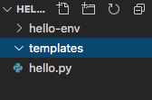
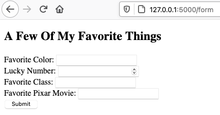
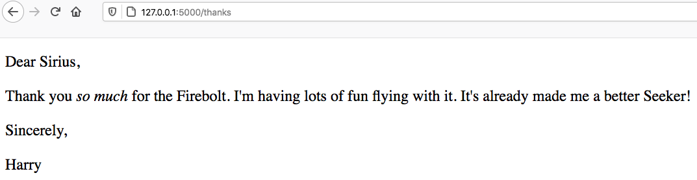

21.5. HTML Templates¶
In our first Flask app, we simply returned a string to display on a webpage. By including HTML tags, we provided some structure for the content. However, this is inefficient. Even for simple webpages, properly formatting the strings becomes tedious, and avoiding errors is difficult. Since every page needs its own string, adding these to our Python functions clutters up our code and makes our program harder to debug. A better approach is to put all of the HTML in a separate file.
This idea lets us separate the logic of our application (the Python code) from the view (what the user sees in their browser).
Why reinvent the wheel? We already learned how to create nice webpages using
HTML and CSS, so we can build those files and include them in our project.
Instead of returning a string, we have each Python function point to a specific
.html file. Flask sends that file to the browser, which renders the
webpage we want.
21.5.1. What are Templates?¶
A template is an outline that can be used multiple times to produce similar results. For example, think of a simple thank-you note:
{kind=link}
With this template, we can send out dozens of messages very quickly. Most of the text stays the same. We just need to fill in the blanks (or write some code to do it for us). The template itself stays the same, but each message looks slightly different.
For our web applications, we can use a .html template to fill in most of
the content for a page. Then we call a Python function to fill in the blanks.
21.5.2. Templates with Flask¶
To use a template in Flask, we need to organize our project files in a very
specific way. We’ll start by creating a templates directory.
Save and commit your work, then checkout a new branch called
template-practice.In the File Explorer, use the buttons to create a new directory called
templates.Any file we want to use as a template MUST go inside this directory. If we don’t put it there, then Flask won’t be able to find the file when we need it.
21.5.2.1. Add a Template¶
Inside the templates folder, create a new file called
favorite_form.html. Paste in this HTML code:
1 2 3 4 5 6 7 8 9 10 11 12 13 14 15 16 17 18 | <!DOCTYPE html>
<html>
<head>
<meta charset="UTF-8">
<meta name="viewport" content="width=device-width">
<title>Flask Template</title>
</head>
<body>
<form>
<h2>A Few Of My Favorite Things</h2>
<label>Favorite Color: <input type="text" name="color"/></label><br>
<label>Lucky Number: <input type="number" name="luck_num"/></label><br>
<label>Favorite Class: <input type="text" name="fav_class"/></label><br>
<label>Favorite Pixar Movie: <input type="text" name="best_pix"/></label><br>
<button>Submit</button>
</form>
</body>
</html>
|
In the Local HTML/CSS section we learned how to open HTML files in the browser. Now, however, we are going to have Flask do that job for us.
21.5.2.2. The render_template Function¶
Return to the
hello.pyprogram. In order to use the template we just created, we need to update the firstimportstatement:1
from flask import Flask, render_template
The
render_templatefunction contains the code we need to find a file and send it to the browser. We do NOT need to know how the function actually works. All we need to remember is the syntax for calling it:render_template("name_of_template")
name_of_templateMUST include the extension for the file, like.html.Next, add this new function to
hello.py:@app.route('/form') def form(): return render_template("favorite_form.html")
Save the code, then run the program. Open a browser and navigate to
http://127.0.0.1:5000/form. Ta da! There’s our form.Flask sent the
favorite_form.htmlfile to the browser.¶
render_template("favorite_form.html") locates the HTML file in our project.
return sends this information to Flask, which passes the file to the
browser. Note that the URL in the address bar is NOT the location of the file
on our computer. The template is on the server, so its web address reflects
this.
Our form doesn’t actually do anything yet, but we’ll deal with that on the next page.
21.5.3. Sending Data to a Template¶
One of the benefits of using a template is that we can pass data to the file
and change its appearance in the browser. To practice this, let’s add another
HTML file to the templates directory. It will be a copy of the thank you
note shown at the top of this page.
Create a new file called
tynote.htmlin thetemplatesfolder.Paste in this code:
1 2 3 4 5 6 7 8 9 10 11 12 13 14 15 16 17 18 19 20
<!DOCTYPE html> <html> <head> <meta charset="UTF-8"> <meta name="viewport" content="width=device-width"> <title>Thank You Note</title> </head> <body> <section style="font-size: 18pt;"> <p>Dear {{name}},</p> <p> Thank you <em>so much</em> for the {{gift}}. I'm having lots of fun {{verb}} with it. It's already made me a better {{noun}}! </p> <p>{{closing_word}},</p> <p>{{author}}</p> </section> </body> </html>
Note that instead of blanks, the text includes placeholders where we want to insert data. Each placeholder contains a variable inside a set of double curly braces
{{}}.Now add this function to
hello.py:@app.route('/thanks') def thanks(): return render_template("tynote.html")
Save the code, then run the program. Open a browser and navigate to
http://127.0.0.1:5000/thanks.
{kind=link}
Notice that the text appears on the screen, but NOT any of the placeholders
like {{name}}. To fill in the blank spaces, we need to send some data to
the template.
21.5.3.1. Arguments with render_template¶
Let’s start by filling in the {{name}} placeholder. We do this by adding
another argument to render_template function call. The general syntax is:
render_template("name_of_template", placeholder_name = value)
placeholder_name is the variable used in the template. value is what we
want to display on the page. For our thank-you message, this looks something
like:
render_template("tynote.html", name = "Bob")
Updating the Python code and refreshing the page gives us:
{kind=link}
Tip
Instead of hard-coding values inside render_template, we can use
variables instead.
@app.route('/thanks')
def thanks():
person = "Bob"
action = "dancing"
return render_template("tynote.html", name = person, verb = action)
Try It!
Add arguments to
render_template()to complete the thank you note.The
tynote.htmltemplate will all placeholders filled.¶Move the
name = personargument to the end of the list inrender_template(). Does this change where thenamevalue appears on the webpage?
21.5.4. Expressions in Placeholders¶
render_template sends data to a selected file. When Flask sees a
placeholder like {{name}} in that template, it replaces it with the
matching value from the data.
Besides variables, Flask can also evaluate simple expressions.
Try It!
- In
tynote.html, replace the{{name}}placeholder with{{name*3}}. What happens? - Replace
{{verb}}with{{verb.capitalize()}}. What happens? - Replace
{{gift}}with{{gift=='wand'}}. What happens?
21.5.5. Video Summaries¶
Here is a walkthrough for creating an HTML template, then rendering it from a Flask application.
The next clip shows how to send data to a webpage from a Python program.
21.5.6. Check Your Understanding¶
Question
In render_template(), the name of the template must come first in the
list of arguments. But what about the other entries?
Does changing the order of the arguments change where their values appear on the webpage?
- Yes
- No